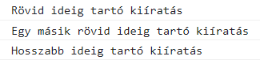
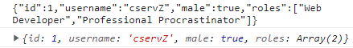

Aszinkron programozás JavaScriptben
Ebben a jegyzetben meghatározzuk a szinkron, illetve az aszinkron programkód fogalmát, majd ezután megnézzük, hogy a JavaScript milyen lehetőségeket biztosít aszinkron adatok feldolgozására. Részletesen áttekintjük a callback függvényeket, a Promise-okat, illetve az async/await kulcsszavak használatát.
1. Szinkron és aszinkron kódrészek
A programjainkban a szinkron kódrészek esetén az egyes utasítások sorban, egymás után hajtódnak végre. Tehát ebben az esetben először mindig megvárjuk, hogy az aktuális utasításunk végrehajtása befejeződjön, még mielőtt rátérnénk a következő utasítás végrehajtására.
Például, ha a JavaScript kódunkban több console.log szerepel egymás után, akkor ezek szinkron módon kerülnek végrehajtásra: mindig megvárjuk az aktuális kiíratás végrehajtását, még mielőtt rátérnénk a következő kiíratásra.
console.log("Első kiíratás"); console.log("Második kiíratás"); console.log("Harmadik kiíratás");

Ezzel szemben az aszinkron kódrészek esetén az egyes utasítások egymástól függetlenül hajtódnak végre. Tehát itt nem várunk arra, amíg az egyes utasítások végrehajtása befejeződik, hanem egyszerre hajtunk végre több, egymástól független utasítást.
JavaScriptben a setTimeout függvény egy tipikus példája az aszinkron utasításoknak. Ezzel a függvénnyel egy megadott hosszúságú "szünetet" rakhatunk a programunkba. Miután ez a "szünet" letelt, végrehajtunk egy utasítássorozatot (amit egy callback függvényként adunk meg).
Mivel a setTimeout aszinkron módon működik, ezért az alábbi példában az utolsó console.log nem fogja megvárni, amíg a setTimeout a 2 másodperces "szünet" után kiíratja a "Hosszabb ideig tartó kiíratás" szöveget, hanem még ezelőtt lefut.
console.log("Rövid ideig tartó kiíratás"); // 2 másodperces (2000 milliszekundum) "szünet" után kiíratunk valamit a konzolra setTimeout(() => console.log("Hosszabb ideig tartó kiíratás"), 2000); console.log("Egy másik rövid ideig tartó kiíratás");

Az aszinkron programozás egyik fő motivációja a felhasználói élmény (user experience) javítása. Ha például van egy webes alkalmazásunk, amely valamilyen adatlekérést végez (pl. adatbázisból tölt be adatokat), akkor az adatlekérés aszinkron módon történő kezelésével elérhetjük, hogy a felhasználó továbbra is gond nélkül használhassa az alkalmazásunkat, amíg az adatlekérés fut a háttérben (így nem "fagy le" az alkalmazás az adat megérkezéséig).
2. Aszinkron JavaScript
Ebben a fejezetben egy példán keresztül nézzük meg, hogy hogyan lehet JavaScript segítségével aszinkron módon adatot lekérdezni egy webszervertől.
A webes szolgáltatás, amit használni fogunk a példáinkban a https://jsonplaceholder.typicode.com/. Ennek az úgynevezett API-nak a segítségével különféle, JSON formátumú mintaadatok (pl. felhasználók, felhasználók posztjai, a posztokra érkező kommentek stb.) iránt indíthatunk HTTP kéréseket.
Ha valaki számára az imént említett fogalmak (HTTP üzenet, API, JSON formátum) ismeretlenek lennének, akkor a 2.1. és 2.2. fejezetekben ezek röviden bemutatásra kerülnek.
2.1. HTTP üzenetek, API-k
Ha az alkalmazásunkban szeretnénk egy webszervertől elkérni valamilyen adatot (pl. egy képet, egy HTML fájlt, JSON formátumú adatot stb.), akkor a böngészőnkkel egy HTTP kérést indítunk a webszerver felé az adott erőforrás iránt.
A szerver a megkapott HTTP kérést feldolgozza, és arra egy HTTP választ küld vissza. Amennyiben "minden rendben volt", akkor a szerver visszaküldi a böngészőnknek a kért erőforrást a válaszüzenetben. Ekkor a HTTP válaszban szereplő státuszkód a 200 OK. Ha valamilyen hiba történt a kliens-szerver kommunikáció során, akkor a HTTP válaszban egy 200 OK-tól eltérő státuszkód szerepel (pl. 404 Not Found, ha a kért erőforrás nem található a szerveren).
A HTTP kéréseknek két fő fajtáját különböztetjük meg:
- A
GET-kérések segítségével jellemzően egy erőforrást kérünk el a szervertől (ebben a jegyzetben csak ilyen típusú HTTP kérésekre fogunk példát nézni). - A
POST-kérések segítségével jellemzően adatot továbbítunk a szerver felé (pl. egy kitöltött űrlap adatait).
Manapság az interneten elérhető rengeteg különféle API (Application Programming Interface = alkalmazásprogramozási felület), amik bárki által felhasználható, nyilvános adatokat tesznek elérhetővé a fejlesztők számára. Mi most egy mintaadatokat rendelkezésünkre bocsátó API-t fogunk használni, de természetesen rengeteg hasznos API megtalálható a weben (pl. aktuális időjárással kapcsolatos adatok, menetrendekkel kapcsolatos információk, véletlenszerű macskás/kutyás képek stb.).
2.2. A JSON formátum
A webes kommunikáció során gyakran használjuk a JSON (JavaScript Object Notation) formátumot adatok továbbítására. Ez egy emberek számára is könnyen olvasható, szöveges formátum.
A JSON formátum által támogatott alapvető adattípusok:
- szám
- szöveg (idézőjelek között adhatjuk meg)
- logikai típus (
truevagyfalseértéke lehet) - tömb
- objektum.
Például az alábbi JSON-objektum egy felhasználót reprezentál:
{ "id": 1, "username": "cservZ", "male": true, "roles": ["Web Developer", "Professional Procrastinator"] }
A JSON formátum típusai és a JavaScript típusai között az alábbi függvényekkel végezhetünk átalakításokat:
JSON.stringify(): egy JavaScript object-ből készít egy JSON formátumú szövegetJSON.parse(): egy JSON formátumú szövegből készít egy JavaScript object-et.
Példa:
const user = {id: 1, username: "cservZ", male: true, roles: ["Web Developer", "Professional Procrastinator"]}; const jsonString = JSON.stringify(user); // object -> JSON console.log(jsonString); const retrievedUser = JSON.parse(jsonString); // JSON -> object console.log(retrievedUser);

2.3. A JavaScript lehetőségei aszinkron adatfeldolgozásra
Legyen az a feladatunk, hogy kérdezzük le aszinkron módon a https://jsonplaceholder.typicode.com/users URL-en található felhasználói adatokat a böngészőben, JavaScript segítségével!
Az alábbiakban megnézünk 3 módszert, aminek segítségével lehetőségünk van aszinkron adatlekérésre JavaScriptben. Ezek közül a Promise-ok és az async/await kulcsszavak a mai napig gyakran használatosak (a callback függvények kevésbé - hamarosan látni fogjuk, hogy miért).
2.3.1. Callback függvények
TODO
2.3.2. Promise-ok
TODO
2.3.3. Az async és await kulcsszavak
TODO